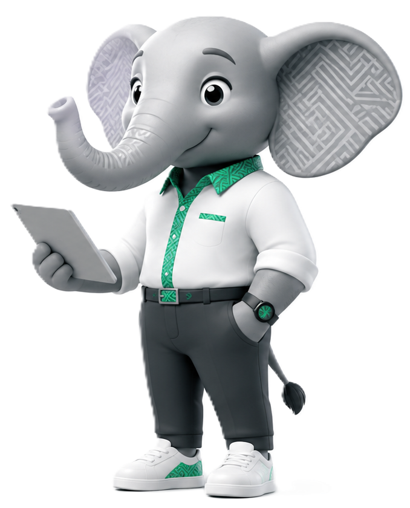

La plateforme intelligente qui rend le travail visible, fiable et accessible.
Le travail informel existe déjà. Nous le rendons visible, fiable et payant.
Brazzaville · République du Congo
01 — Le problème
Tout le monde connaît quelqu'un de fiable. Personne ne sait comment le trouver.
Les services informels existent déjà partout — ménage, garde d'enfants, réparation, livraison — mais circulent dans des réseaux fermés. Tout le monde y perd.
Côté travailleurs
Peu de visibilité en dehors du cercle personnel
Aucun profil professionnel simple et vérifiable
Des opportunités perdues, faute de canal fiable
Une réputation impossible à construire dans la durée
Côté employeurs
Une recherche longue, incertaine et stressante
Peu d'informations sur l'identité et l'expérience
Aucun historique fiable, aucun mécanisme de responsabilité
Des agences classiques trop chères pour de petits besoins
Enjeu centralLe problème n'est ni l'absence de travailleurs, ni celle d'employeurs — c'est l'absence d'un système simple, vérifié et organisé pour qu'ils se rencontrent en confiance.
02 — L'opportunité
Brazzaville, point de départ stratégique
Un marché de millions de transactions… qui se passe encore par bouche-à-oreille.
WhatsApp partout
Le canal numéro un, déjà dans les habitudes quotidiennes.
Besoin réel
Une demande quotidienne et forte de services locaux.
Aucun acteur structurant
Pas de plateforme avec vérification et réputation.
Tremplin régional
Un modèle réplicable vers d'autres villes africaines.

03 — La solution
WhatsApp devient une place de marché.
Trouver du travail ou recruter une personne de confiance — sans quitter votre conversation.
Zéro app. Zéro friction. Juste une conversation.
Pas d'app à installerProfils vérifiésRecommandations intelligentes
04 — Comment ça marche
Deux parcours, une mécanique simple
La même logique des deux côtés : s'inscrire, se faire vérifier, se rencontrer en confiance, puis s'évaluer.
Le travailleur
01
Inscription
02
Vérification
03
Recommandations
04
Mission
05
Évaluation
L'employeur
01
Inscription
02
Publication de mission
03
Profils recommandés
04
Contact débloqué
05
Évaluation
05 — Le modèle
Quatre piliers
Un groupe WhatsApp crée du bruit. Rabotka crée de la confiance.
01
Accessibilité
Tout passe par WhatsApp — un canal familier, léger, déjà présent dans les habitudes.
02
Confiance
Chaque profil est vérifié avant de pouvoir utiliser pleinement la plateforme.
03
Pertinence
Les recommandations tiennent compte des compétences, de la localisation et du timing.
04
Responsabilité
Évaluations, historique et score de fiabilité récompensent les comportements sérieux.
06 — Le moteur intelligent
Plus vous l'utilisez, plus il trouve juste.
InterestGraph, notre moteur de recommandation, apprend de chaque action pour proposer les bonnes missions aux bonnes personnes — et s'améliore avec le temps.
Offres vues
Sauvegardées
Ignorées
Candidatures
Localisation
Urgence
Interest Graph
Machine learning
Recommandations pertinentes
Moins de bruit, plus d'offres adaptées — et plus de contacts débloqués.
La donnée d'usage devient un avantage compétitif — impossible à reproduire avec de simples groupes WhatsApp.
07 — Modèle économique
Payer quand il y a de la valeur
S'inscrire, découvrir et publier reste gratuit. La monétisation arrive au moment où la mise en relation devient réellement utile.
REVENUS AUJOURD'HUI
Déblocage de contact
Frais faible, payé quand les deux parties veulent avancer vers une vraie mission. Le cœur du modèle.
Crédit de bienvenue
Faire découvrir le service sans bloquer le premier usage.
Publicité ciblée
Des partenaires locaux s'adressent à des audiences utiles : travailleurs, employeurs, PME.
REVENUS B2B — DEMAIN
Comptes entreprises
Tableaux de bord pour employeurs récurrents.
Recrutements groupés
Plusieurs profils mobilisés pour un même besoin.
Partenariats institutionnels
PME, écoles, ONG et programmes d'insertion.
Pas d'abonnement obligatoireCoût lié à une action concrèteAdapté au mobile money local
08 — Impact social
Un impact à chaque niveau
Rabotka crée de la valeur pour chaque acteur du marché local — et organise progressivement l'informel.
Travailleurs
Plus de visibilité, accès à des missions et une réputation qui se construit dans la durée.
Employeurs
Gain de temps, incertitude réduite et accès à des profils plus fiables.
PME
Trouver rapidement du personnel ponctuel ou récurrent, sans agence coûteuse.
Écosystème
Formalisation progressive des services informels grâce à la donnée et à la réputation.
09 — Déploiement
Cinq phases de croissance
Prouver le modèle à Brazzaville, puis l'étendre par la demande réelle et les partenariats.
Phase 1
Brazzaville
Noyau de travailleurs vérifiés, premières missions de qualité.
Phase 2
Catégories clés
Élargir aux services à forte demande, étape par étape.
Phase 3
Partenariats
PME, écoles, ONG et programmes d'insertion.
Phase 4
Multi-villes
Réplication vers d'autres villes africaines.
Phase 5
Plateforme carrière
Emploi, talents, services et carrières réunis.
10 — Vision
Demain, chercher du travail en Afrique francophone commencera par Rabotka.